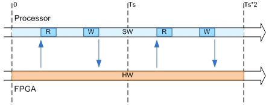

IP Core User Guide
Theory of OperationThis IP core is designed to be connected to an embedded processor with an AXI4-Lite interface. The processor acts as master, and the IP core acts as slave. By accessing the generated registers via the AXI4-Lite interface, the processor can control the IP core, and read and write data from and to the IP core.
For example, to reset the IP core, write 0x1 to the bit 0 of IPCore_Reset register. To enable or disable the IP core, write 0x1 or 0x0 to the IPCore_Enable register. To access the data ports of the MATLAB/Simulink algorithm, read or write to the associated data registers.

This IP core also support the External Port interface. To connect the external ports to the FPGA external IO pins, add FPGA pin assignment constraints in the Xilinx Vivado environment.
Processor/FPGA Synchronization
The Free running mode means there is no explicit synchronization between embedded processor software execution (SW) and the IP core (HW). SW and HW runs independently. The data written from the processor to IP core takes effect immediately, and the data read from the IP core is the latest data available on the IP core output ports.

Xilinx Vivado Environment Integration
This IP Core is generated for the Xilinx Vivado environment. The following steps are an example showing how to integrate the generated IP core into Xilinx Vivado environment:
1. The generated IP core is a zip package file under the IP core folder. Please check the Summary section of this report for the IP zip file name and folder.
2. In the Vivado project, go to Project Settings -> IP -> Repository Manager, add the folder containing the IP zip file as IP Repository.
3. In Repository Manger, click the "Add IP" button to add IP zip file to the IP repository. This step adds the generated IP into the Vivado IP Catalog.
4. In the Vivado project, find the generated IP core in the IP Catalog under category "HDL Coder Generated IP". In you have a Vivado block design open, you can add the generated IP into your block design.
5. Connect the AXI4_Lite port of the IP core to the embedded processor's AXI master port.
6. Connect the clock and reset ports of the IP core to the global clock and reset signals.
7. Assign an Offset Address for the IP core in the Address Editor.
8. Connect external ports and add FPGA pin assignment constraints to constraint file.
9. Generate FPGA bitstream and download the bitstream to target device.
If you are targeting Xilinx Zynq hardwares supported by HDL Coder Support Package for Xilinx Zynq-7000, you can select the board you are using in the Target platform option in the Set Target > Set Target Device and Synthesis Tool task. You can then use Embedded System Integration tasks in HDL Workflow Advisor to help you integrate the generated IP core into Xilinx Vivado environment.